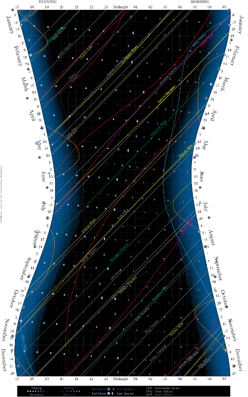

A sky almanac written in Python
View the Project on GitHub digitalvapor/PySkyAlmanac
This is a sky gazing chart for San Francisco. It was generated using my fork of atakan's PySkyAlmanac.
This program prepares a chart similar to Sky & Telescope's annual Skygazer's Almanac.
The code is written in Python. It uses PyX for preparing the PDF output, PyEphem for astronomical calculations, and SciPy for a simple root-finding calculation. PyEphem uses routines from XEphem.
This is in development stage and certainly has bugs. Please let me know in the issue tracker if you find any astronomical, code, or other issue.
Keywords: sky almanac, celestial events, San Francisco, astronomy
pip install pyephem
python ./setup.py install.apt-get install python-numpy python-scipy python-matplotlib ipython ipython-notebook python-pandas python-sympy python-nose. See here.See local_info.py to see options for setting your location. There is minimal setup; you only have to change the obs_city field. That is, obs_city = 'San Francisco' or Istanbul.
It is of course possible your city isn't listed, so in that case switch the manually_set flag to True and fill in your latitude, longitude, year, and timezone at minimum. See this quick reference on setting up your observer. elevation (m) is optional. Can also set epoch, temp and pressure if desired.
Turkish, English and Chinese languages are supported. In translations.py change t=tr to either en or ch.
Set display_moon_stuff = True or False for moon stuff.
You can copy, modify and distribute the code under the terms of the GNU General Public License. See the file COPYING for more details. You can also freely distribute the end product, the chart itself. If you want to give a reference to the tool creating the chart, you can use the URL https://github.com/atakan/PySkyAlmanac
{kind=link}